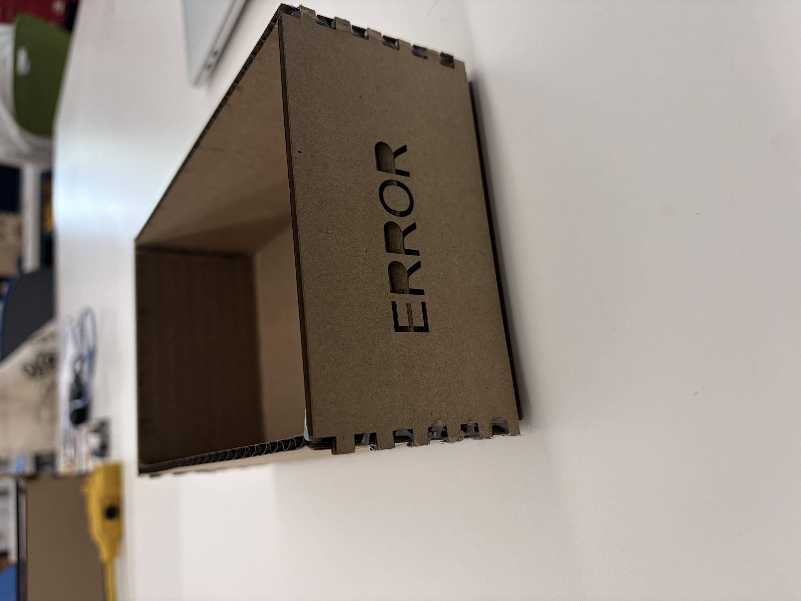
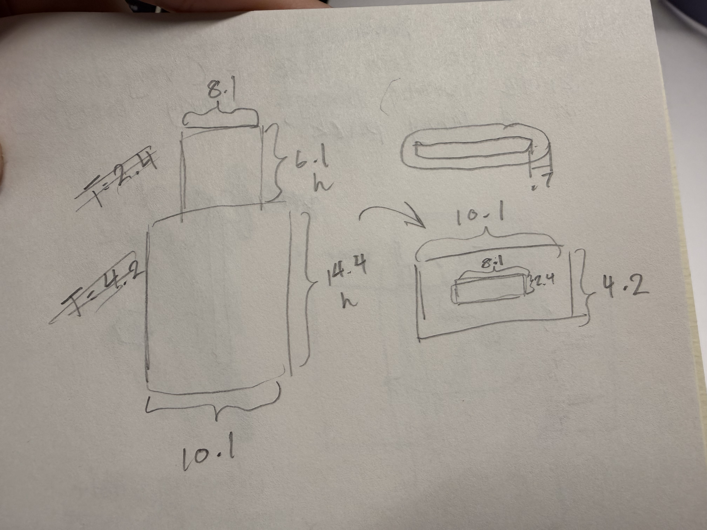
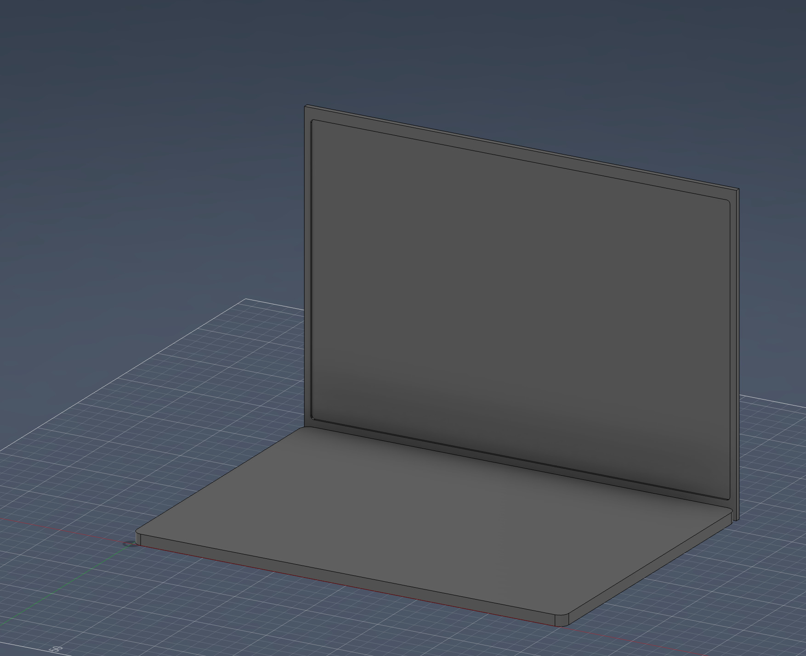

Week 2: 2D/3D Design
You have three assignments: design a cardboard box, work through a Fusion 360 tutorial, and model some household objects or components from the lab. Include some pictures and downloads to your 3D models.
Box Design


This is how you create a link to download a file.
There were a lot of errors when making this box; first, my computer retained some of the previous lines even after the parameters were changed to 6--leaving some previous lines from the 9 parameter set--by this point I was already talking to Victor, and he recommened to try again as a whole. I did, and after some tries, I did get the basis of a box. I then wanted to decorate it with the word 'ERROR', and even then the words didn't show up in Rhino the first time. Again, Victor helped me through. The most surprising task of this project was when Rhino itself showed points and didn't line things well. Victor also helped me with that part. After taking the cardboard out of the laser cutting machine, the rest of the process was smooth sailing--as it should be. I reinforced my box with hot glue in the inside and the outside, just for good measure.
Fusion 360 Tutorial


CAD Practice
Computer

I originally wanted to do my pencil, but then didn't know how to make tapered ends. i eventually gave up and decided to do the roughest sketch of my computer. By this point I only had a general grasp of Fusion, so this model took me some time. I first seperated the screeen width rectangle and the base computer rectangle, extruded the screen first, then redo the sketch for the base of the computer and then extruded the base. For the indent, I just winged it to make it look more clear that it was a screen; to do this I opened a sketch in the ZY plane--the one thats facing the screen--and press/pulled it to get a negative space around the screen.
Head of a cable

I first made a rectangle--the part of the cable that would go into devices-- and extruded it to the base's height plus the tiny height. After rounding out the edges I would push pull the base of the rectangle, just so that there is a floating, correctly-sized head of a cable. The rest of the process is rounding and extruding the base of the cable to meet the tip of the rectangle.